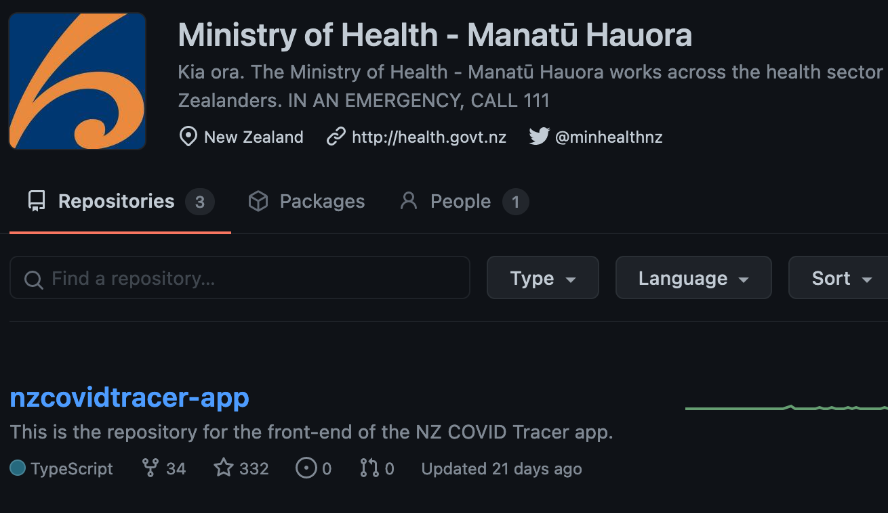

Infrastructure for Innovation
Haere Mai Stewards
- of the land
- Tangata Whenua
- of the plan
- City Council
- of the cloud
- iiiii
Now for the Future
- upgraded digital
- systems, security, performance
- local talent
- less money leaving Tauranga
- international ecosystem
- free software blueprints
Firm Foundations
Many years later, a Global Advisor:
- Cloud Native Compute Foundation
- Catalyst provides Certified Kubernetes
- LF Public Health
- NZ COVID App uses GAEN
- Free Software Foundation
- Public Money? Public Code!
Cloud Native Compute Foundation
NZ CNCF Certified Cloud
Catalyst Cloud announces CNCF certified Kubernetes platform

Public Health - GAEN+Bluetooth

NZ COVID Contract Tracing

Public Money? Public Code!
- No artificial limits
- Meet our own needs
- Invest in local talent
- Less out-of-town contractors
Street Repairs in Tauranga
Investing in our Future
Our youth are the future, and will be working for council within ten years.
- Tauranga Teens
- speaking overseas on cloud infrastructure
- Cloud Native
- from an early age
- Beyond Us Impact
- servant leaders of tomorrow
CNCF Support for Tauranga
The CNCF has offered to help onramp NZ students:
- Curriculm and Training
- to get our youth solving local problems
- Certifications
- to showcase their knowledge
- Conference Passes
- KubeCon and many others
- Paid Internship Programs
- (Google Summer of code and others)
Now for the Future
The call to action is simple here:
What Software does Council currently use?
Can Open Source be an explicit part of the conversation?
Can I be invited to those conversations?